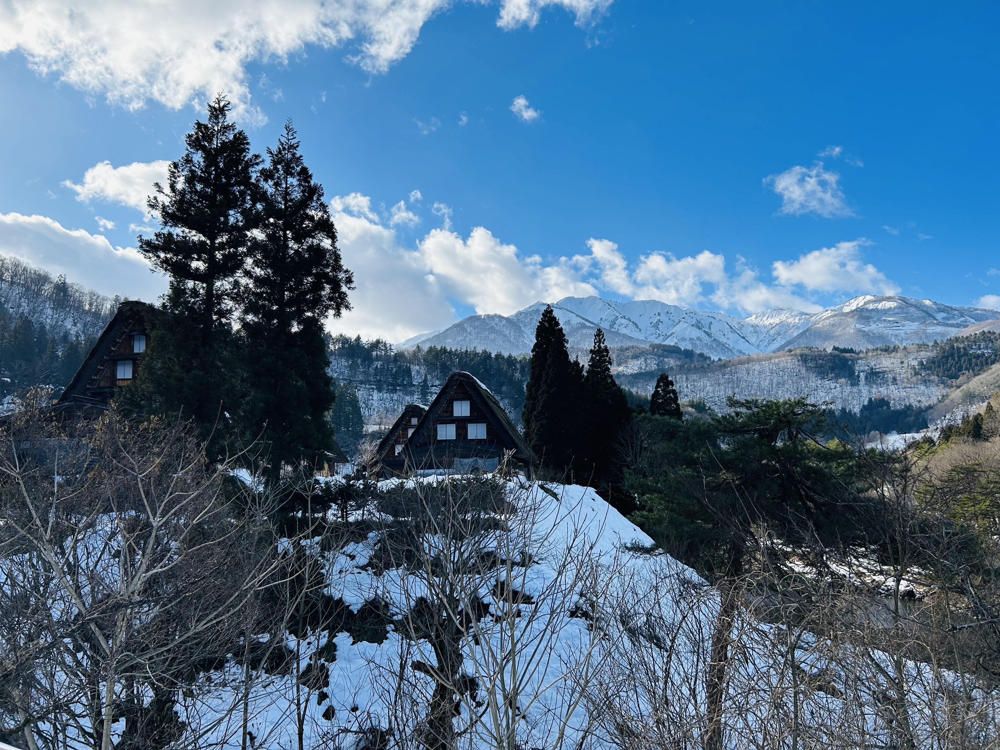
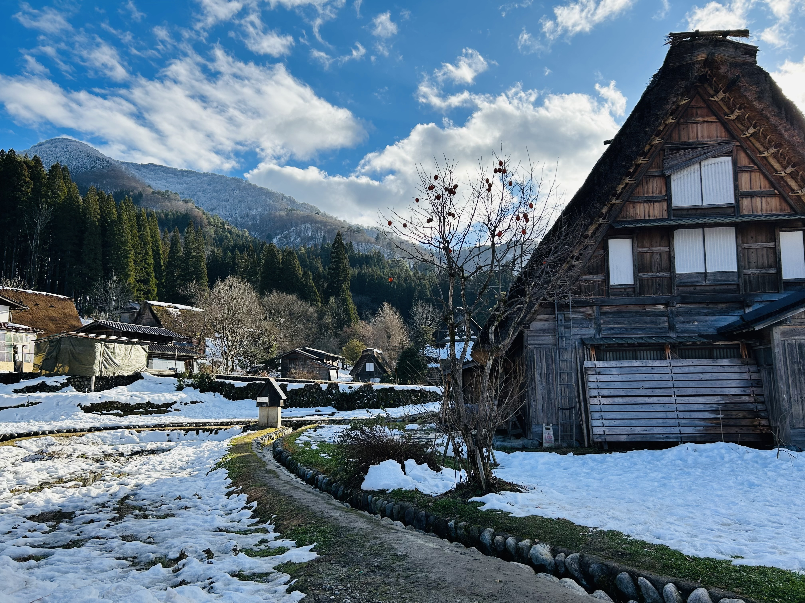
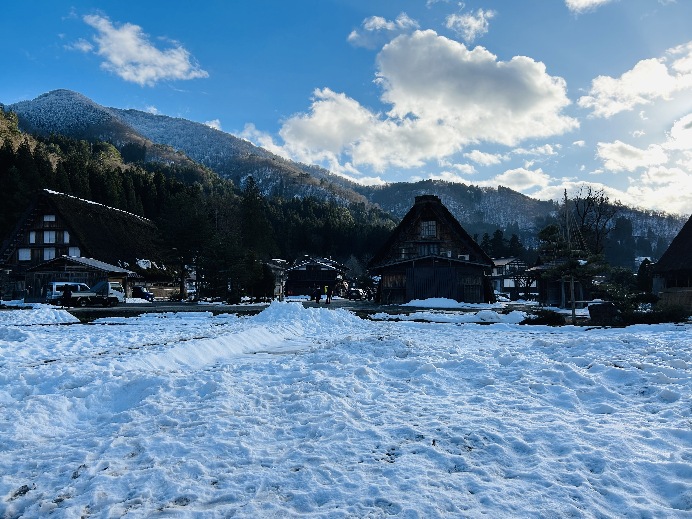
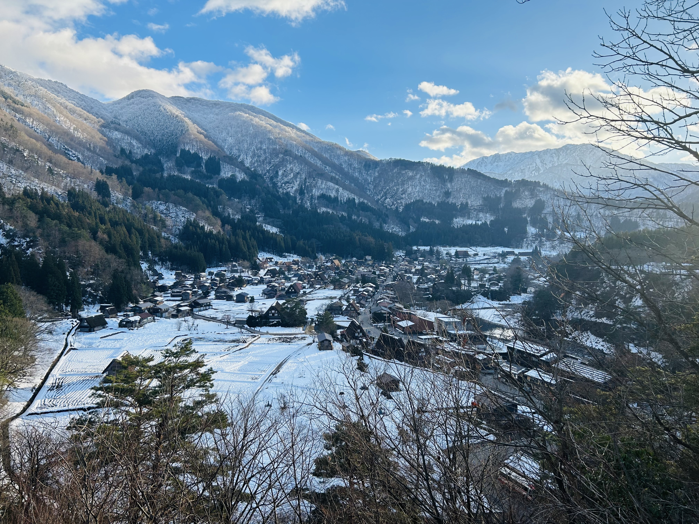
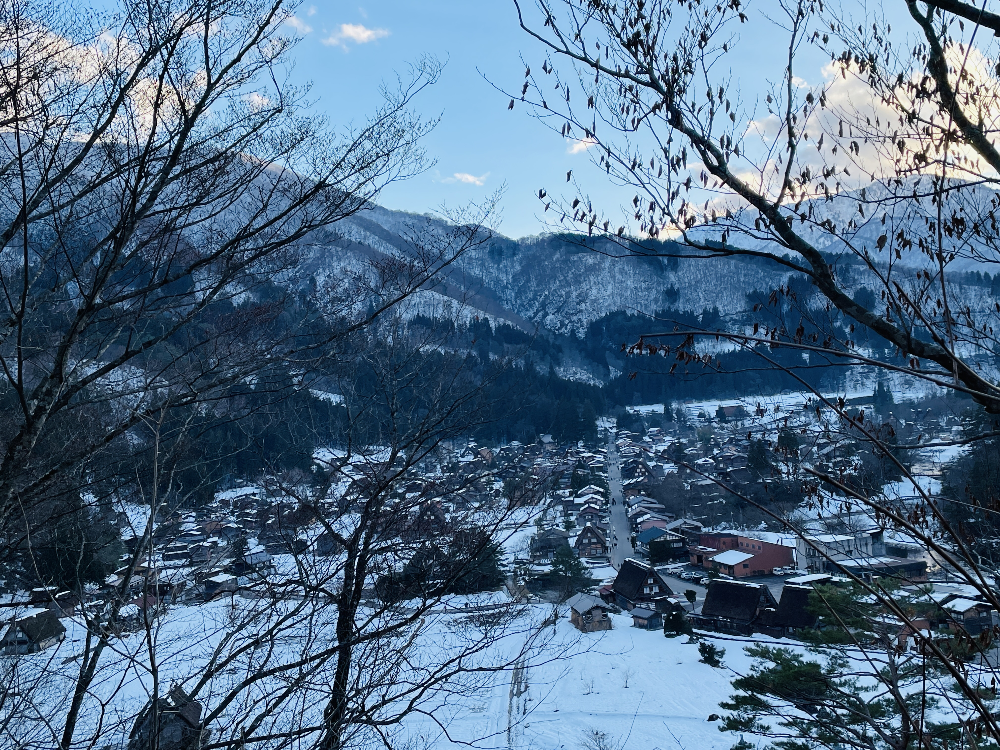

Winter transforms Shirakawago into a magical snow-covered village straight from a fairytale. Thick layers of snow blanket the traditional gassho-zukuri farmhouses, creating a peaceful and timeless atmosphere deep in the Japanese Alps.
As snowflakes fall softly from the sky, warm lights glow from inside the steep thatched roofs, offering a beautiful contrast against the white landscape. Walking through the village feels calm and quiet, with only the soft crunch of snow beneath your feet.
The winter scenery, combined with Shirakawago’s rich history and preserved architecture, makes it one of Japan’s most unforgettable winter destinations. Whether viewed from the observation deck or explored on foot, the village in winter feels cozy, serene, and truly enchanting. ❄️✨




